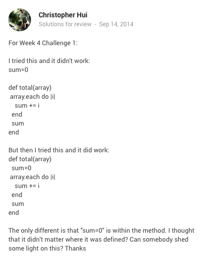

CHRISTOPHER HUI
Asking questions is a great way to learn. Over Phase 0, I have encountered numerous questions about programming/coding. I had so many questions because programming is still something relatively new to me. I’ve learned that asking questions doesn’t yield answers, but asking good questions yields answers. I have found that the key ingredient to asking a good question is clarity.
Clarity encompasses everything needed to ask a good question. Clarity addresses proper formatting and punctuation. Clarity ensures the reader understands your problem/question so that they can formulate an appropriate answer. Clarity also helps both parties to understand each other.
Below I have a picture of a question that I asked in the Google Community and I’ll explain why I think it was a good and clear question.
1. I thought it was good for everyone to understand where the question is coming from. I made it clear that the question was coming from Week 4 Challenge 1. This way, people who are trying to help can easily track down the directions and goals for the challenge.
2. Code. I put my code out on the community to other students can see what I am trying to do and why I am having issues. For this example, I had code that worked, and code that did not worked. I didn’t understand why the code wasn’t working, so I wanted clarification on why the two blocks of code were different. It is important to let others see your code so they can understand the issue and formulate an answer that fits the context of the code.
3. Explanations are also important when asking questions. This will add any additional information that might aid the reader in solving the problem. Explaining your train of thought and your approach will help readers understand what your goal is. In this example, I explained what I thought and my confusion about the code. This was a relatively short explanation for my basic question, but in more complicated questions, it’s important to relay to the reader what your logic and approach is. This way, they can help address your specific issue, rather than give a generic answer.
4. You can also see that there is good formatting, proper punctuation, and clear grammar. This just helps make things easier for the reader’s eyes. The better your question looks, the more likely you’ll get an answer.
5. Be courteous/polite to those who help you! A simple “thanks” or compliment will make it more likely for somebody to answer your questions in the future.
Asking clear questions is extremely important. If the reader doesn’t understand your problem, how can they help you? It is important for the question asker to be clear about the problems they are having. Asking questions is a great learning tool, but it is only effective if you ask good and clear questions!